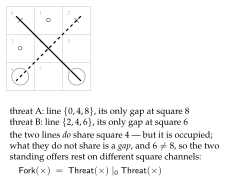
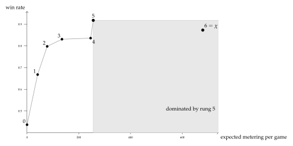

Chapter 22
Learning to Play
A framework that explains everything after the fact explains nothing. The previous chapter is a construction with a great many moving parts, and the honest test of it is whether the parts pay for themselves on a domain where we already know every answer and cannot be fooled about whether an explanation is doing work.
So this chapter plays noughts-and-crosses. The whole game — all 255{,}168 plays, all 5{,}478 reachable positions — is small enough to enumerate exactly, which means every claim below is a computed number rather than an argument. A ladder of six theories is built inside the generated logic, from “take the center” to the exact minimax strategy, each rung priced by the depth of the formula it installs, and each rung’s winnings measured against the metering.
Two results are worth knowing before the details arrive. The first is that the logic dictates the encoding rather than the other way round: requiring the notion of a fork to be expressible forces the board to be represented with squares rather than lines as its components, and there is no freedom in the matter. The second is that the true theory loses. The exact strategy wins more games than any rung below it and is still the worst purchase on the ladder, because it costs nearly three times what the rung below costs to buy four percentage points. Truth here buys safety — it is the only strategy that never loses — and safety is not food.
The chapter closes on a result i did not expect and have not been able to argue away: a population that has completely solved its environment draws every game, harvests nothing, and starves. A solved science is a dead ecology. Imperfection is load-bearing.
22.1 Introduction
22.1.1 Why a worked example, and why this one
The companion note \(\chSci\) asks what it would take for a computation to do science, and answers in four parts: the environment of a computation is other computations; the hypothesis language is not chosen but generated from the presentation of the calculus; a hypothesis becomes an experiment by being installed as a guard, so that confirmation is a rendezvous; and the motive is metabolic, since tokens are conserved, never minted, and a learner that predicts badly starves.
Its Appendix A gives a small ecosystem in which every one of those constructions
appears as ordinary code. What that appendix does not do—and the omission is
the reason for this note—is show the framework reasoning. Its
hypotheses are q => q > 0 and q => q > 4: arithmetic
predicates on the size of a quantum. No formula in it uses a structural
connective, no assay discriminates between two structurally distinct
hypotheses, the relaxation lattice is never walked with anything on it, and at
no point does a better hypothesis visibly buy better performance. The appendix
demonstrates that the framework hosts a learner. It does not demonstrate
that it produces one.
The remedy is to instantiate the framework on a domain where the reader holds the correct answers independently, so that what the machinery emits can be scored against a standard the machinery did not supply. We take noughts-and-crosses. The choice needs a defense, since the game is trivial, and the defense is that triviality is the point: a worked example is for legibility, not difficulty, and a game small enough to solve exhaustively is a game in which every claim below can be checked rather than asserted. We checked all of them; §22.8 reports the numbers and Appendix 22.14 says how to regenerate them.
The obvious alternative—a magic-square puzzle—is the same problem. In the game of Fifteen, two players alternately claim numbers from \(1\) to \(9\) and the first to hold three summing to fifteen wins. Writing the numbers into a Lo Shu square makes the triples summing to fifteen exactly the lines of a three-by-three grid, and the two games are isomorphic. We mention this because the puzzle framing is the one that would have been chosen for a solitary solver, and the isomorphism shows what that framing costs: it hides the opponent. An adversary is not an inconvenience here. It is the thing that makes the environment a computation with a strategy to be learned, which is the only kind of environment the companion note’s ontology has.
22.1.2 What the mapping is supposed to show
Four features of the framework are exercised, and the interest is that each is forced by the domain rather than imposed on it.
- A move is an assay.
One cannot observe an opponent without playing, and the position afterwards is not the position before. \S1.1 of \(\chSci\) argues that observation is action; here it is not an argument but the rules of the game.
- Minimax is an alternating modal formula.
The modalities are labeled by redex positions, and §22.4.1 shows that in this domain a redex position is a move. So \(\exists s.\langle K_s\rangle \forall t. [K_t]\cdots\) reads “I have a move such that for every reply I have a move such that…”, which is minimax written out, and the quantifiers range over something rather than standing in for it. Proposition 21.2 of \(\chSci\) then has something to say about which half of the game is cheap to learn.
- A fork is a separating conjunction.
Two threats whose completing squares are distinct. Disjointness is the entire content of the concept, and graded separation at \(k=0\) is exactly disjointness of interface. §22.4 shows that this demand dictates the board encoding.
- Destructive assay bites.
If winning harvests the loser, one never plays the same opponent twice, so hypotheses about individuals are worthless and the scientist must hold a hypothesis about a namespace of opponents.
22.1.3 What we are claiming, and what we are not
We claim that the framework, instantiated on this domain, generates a hypothesis language in which the recognized concepts of the game are terms rather than hand-coded features; that pricing those terms by modal depth produces a cost–benefit structure with a measurable and non-obvious shape; and that three of the companion note’s propositions—the modal asymmetry, “yield, not truth”, and confinement—are visible in the measurements rather than merely consistent with them.
We do not claim to have built a strong player. Noughts-and-crosses is solved and
a lookup table plays it perfectly; nothing here competes with that and nothing
should. Nor do we claim the pricing schedule is canonical: \(\kappa(d)=2^{d}\) is
a choice, defended in §22.6.1 and varied in §22.8, and
the qualitative results survive the variation while the exact boundaries do not.
Finally, the guards below are written in the ideal logic. The current
interpreter accepts only the arithmetic and pattern fragment of the
where clause; where a guard uses a structural or modal connective it is
a specification of a check rather than a check the reducer performs, and we mark
each such occurrence.
22.2 What this chapter carries forward
Everything below is machinery from \(\chSci\), restated compactly enough that the worked example can be followed without turning back, and no more compactly than that. Where a construction is used but not re-derived, the derivation is there; the spatial–behavioral rubric is developed in [23].
The cut, and three grades of access.
A world is \(W \equiv S \mid E\): the scientist and its environment, separated by parallel composition. Computations are ontologically isolated, so \(E\) is other computations, and what \(S\) can come to know of \(E\) is bounded above by \(E\)’s context-labeled bisimulation class. Access comes in exactly three grades: perception, the structural predicates evaluated at the surface of \(E\), priced by a schedule \(\kappa_{\mathrm{sense}}(d)\) monotone in formula depth; interaction, the context-labeled modalities, costing a rendezvous per step; and reflection, the name predicate \(@\varphi\) applied to names \(S\) already holds, which is cheap because it passes through no surface.
The logic is generated.
Feeding the presentation of the \(\rh{}\) calculus to the OSLF family yields one structural connective per term former, one context-labeled modality per rewrite rule and redex position, and—because \(\mid\) carries an associative–commutative theory—a genuine separating conjunction: \[P \models \varphi \mid \psi \iff P \equiv Q \mid R \text{ with } Q \models \varphi,\ R \models \psi .\] Because a name is a quoted process, the name predicate \(n \models @\varphi \iff n = @P\) with \(P \models \varphi\) sees into the structure of a name; this is namespace logic [39], in which one describes a namespace by a property rather than enumerating it. The classifier note [23] adds a greatest fixed point \(\nu X.\varphi\) and a graded separation counting how much of an interface two halves of a term share. We use both, but we take the second in a form the next paragraph explains.
There is no restriction, so there is no hidden-name quantifier.
The classifier note grades its separation over a vector of restricted names and reaches under the binder with a hidden-name quantifier \(\Hq\). We do not, because in this setting there is no binder. Restriction is syntactic sugar (\(\chSci\), Remark 21.3): a name is a quoted process, and the calculus has a standing theorem that no process ever contains the name that codes it.
Let \(P\) be a process and \(C[-]\) any context with \(C[P] \neq P\). Then \(@C[P] \notin \mathrm{n}(P)\). Hence a name fresh in \(P\) may be manufactured by quoting any term properly containing \(P\), with no registry and no consultation.
The no-self-code theorem gives \(@Q \notin \mathrm{n}(Q)\) for every \(Q\), and the argument is a well-foundedness one: a name occurring in a term codes a strictly smaller term. \(C[P]\) properly contains \(P\), so \(@C[P]\) codes something larger than \(P\) and cannot occur among the names of \(P\).
Two things follow that the rest of the note uses. Freshness is relative to a scope rather than global, which is all any practical use requires and which keeps the scheme decentralized—a central name server would be an oracle sitting across the cut, contradicting isolation outright. And since nothing is bound, nothing is hidden from description: \(\Hq\) has no work to do, and where the classifier note grades separation over a restriction vector we grade it over a namespace given by a name predicate, \[P \models \varphi \mid_k^{N} \psi \iff P \equiv Q\mid R,\ \ Q \models \varphi,\ R \models \psi,\ \ |\,\mathrm{fn}(Q)\cap \mathrm{fn}(R) \cap N\,| = k ,\] with \(N\) described rather than enumerated. Everything this note does that a modal logic cannot do is done with \(\mid_k^N\), and §22.4 turns on the choice of \(N\).
Removing restriction removes the only mechanism by which a computation could be unobservable rather than merely expensive to observe. That is not a loss; it is the position \(\chSci\) already takes when it prices concealment by a depth parameter \(\delta\) instead of a barrier. It also settles a reading we would otherwise have had to argue for: in §22.3 we take \(\delta\) to be the number of plies of lookahead needed to model an opponent, and with no restriction available that is the only thing \(\delta\) can be. A player’s strategy is never hidden. It is only ever deep.
Hypotheses are guards.
The where clause of the \(\rh{}\)
calculus variant [24] puts a formula in operational position:
\(\texttt{for}(p \leftarrow c \ \texttt{where}\ \vartheta)P\). A hypothesis
installed as a guard is an experiment and a confirmation is a rendezvous;
nothing is carried and no interpreter is needed, and the cost of testing is
metered by the apparatus that meters everything else. An assay is a
complementary guard pair, on \(\varphi\) and on \(\neg\varphi\), whose three
outcomes are confirm, refute, and \(\bot\)—the last being the
honest residue in which the environment did not answer in time.
The space and its metric.
Beneath the characteristic formula \(\chi_P\) sits a lattice of progressively weaker formulae obtained by forgetting conjuncts. Hypotheses live there, and revision is a move on it. The metric is ultrametric and stratified by the \(\nu\)-unfolding stage: \(d(\varphi,\psi) = 2^{-n}\) when the two agree on all approximants below stage \(n\) and differ at \(n\). Since modal depth is what a finite budget bounds, distance, depth, and cost are one graded structure. The geometry is a tree, so there is no gradient, and Proposition 21.4 of \(\chSci\)—confinement—says a walk whose steps are all shorter than \(2^{-n}\) never leaves the ball of radius \(2^{-n}\) it started in.
The game.
Tokens are conserved: \(\sigma + \kappa = \sigma_0 = \Theta\), with \(\sigma\) held in live stacks and \(\kappa\) migrated into the record. There is no primary producer. Under the internalizing encoding \(\llbracket -\rrbracket : \Cost(\rh) \to \rh\) a located stack becomes a message at a metabolic channel \(m_P\), and harvest is an ordinary receipt on \(m_P\) performed by someone else. In \(\Cost(\rh)\) stacks are inviolable; in the image they are messages. The ecology lives in that gap, and Theorem 21.1 of \(\chSci\) identifies the predatory contexts as exactly the non-image contexts holding a metabolic name. A game, in the technical sense of Definition 21.9 there, is a choice of admitted context class \(\mathcal{A}\) with \(\llbracket \Cost(\rh)\text{-Ctx}\rrbracket \subseteq \mathcal{A} \subseteq \rh\text{-Ctx}\).
22.3 The world
22.3.1 Three kinds of thing, and only one of them holds tokens
The world contains an arena, a practice wall, and a population of players.
The arena implements the rules. It alternates moves, detects completed lines, and—this is the only thing about it that matters structurally—on a win it hands the winner the loser’s metabolic name. It holds no stack of its own and it mints nothing. It routes.
That distinction is what keeps \S16 of \(\chSci\) intact. The objection to an exogenous reward signal is that it requires a referee holding a mint, and a referee with a mint destroys conservation and with it the entire motivational story. An arena that routes is not such a referee: every token it moves already existed, in the loser’s stack, and the total is unchanged. What the arena supplies is not value but permission.
Definition 21.9 of \(\chSci\) leaves \(\mathcal{A}\) as a parameter and observes that its two endpoints are degenerate: at one end the decorated calculus with no game at all, at the other total war in which any context takes anything it can address. A game of noughts-and-crosses picks out a specific interior point. The contexts admitted to hold \(m_P\) are exactly those that have completed a line against \(P\), and by Theorem 21.1 those are non-image contexts. So the rules of the game are not decoration on the ecology; the rules of the game are the choice of \(\mathcal A\), and predation is legal here for precisely one reason, which is that somebody won.
\(\chSci\) distinguishes the capability-gated game—contexts that derive \(m_P\) from structure they can perceive—from one in which the name is simply handed over. Noughts-and-crosses is gated in exactly that sense once one asks how a player comes to complete a line: it must perceive the position, and perceiving the position is priced. The derivation is the play.
22.3.2 The wall is a source, not a prey
A world in which the only food is other players is a world of pure heterotrophs, and by \S11 of \(\chSci\) such worlds pay an unbounded epistemic rent and are hard to keep alive. We therefore include a practice wall: a stationary player that moves uniformly at random, backed by a finite reserve, which pays a small quantum per game played against it.
The wall has the access profile of a source in the precise sense of \(\chSci\), \S11.2: it is a persistent emitter, rate-limited by being a single contract, non-exclusive since anyone may call it, non-adaptive because its policy never revises, and exhaustible. A player is prey by the complementary profile: a linear send, exhaustible, exclusive, and adaptive. The distinction is not a difference of sort or of rewrite rule but of multiplicity, which is what makes the trophic split a fact about the cut rather than a taxonomy imposed on it.
This gives the world its two order parameters in interpretable form.
\(\delta\), the concealment depth, is how many plies of lookahead are needed to model one’s opponent. The wall has \(\delta = 0\): its policy is uniform and there is nothing to learn. A player running the top rung has a \(\delta\) of four or more.
\(\iota\), the fraction of \(\Theta\) already internal to scientists rather than loose in the environment, is the ratio of the players’ stacks to the wall’s remaining reserve. It rises monotonically as the wall is drained.
22.3.3 Conservation, stated for this world
Write \(\Theta = R_0 + \sum_i \sigma_i(0)\) for the wall’s opening reserve plus the players’ opening stacks. Four operations move tokens and none creates them: the wall’s payout moves reserve into a player; harvest moves a loser’s stack into a winner’s; endowment moves a parent’s stack into a child’s; and the metabolic debit moves a token from \(\sigma\) into \(\kappa\). Hence \(\sigma+\kappa = \Theta\) at every step, and the world is a finite race. The listing of Appendix 22.13 can be audited for this by inspection.
22.4 The board: the logic dictates the encoding
Here is the first place where the domain talks back, and we think it is the most instructive moment in the note.
We want “fork” to be expressible, because a fork is the first genuinely strategic concept in the game and because it is exactly the sort of thing a game-playing program hand-codes as a feature. A fork is a double threat: a position from which one has two distinct winning replies, so that the opponent can block only one. Disjointness is the whole content: two threats sharing their completing square are not a fork, they are one threat counted twice.
Separation is the connective for that. But which separation, and of what? The answer depends on how the board is encoded, and the constraint turns out to be tight.
The encoding.
A board \(b\) carries, for each square \(k\), two names manufactured by reflection in the manner of the knot encoding’s arcs: a move channel \(\mathit{sq}_k = @[*b,k]\) and a mark cell \(\mathit{mk}_k = @[*b,\texttt{"m"},k]\). These are not drawn from a stock of atoms and they are not bound by anything. They are Proposition 22.1 in use: each is the quote of a term properly containing the board, hence fresh in the board, and the family is generated by a decidable predicate on names, so the whole namespace can be described—which is what \(\mathit{Th}_b\) below does and what makes the graded separation available at all. An empty square is a receipt offering to be claimed; an occupied square is the absence of that receipt together with a resting send on its mark cell: \[\mathsf{Empty}_k \;\equiv\; \texttt{for}(@p \leftarrow \mathit{sq}_k\ \&\ @\_ \leftarrow \mathit{mk}_k)\{\ \mathit{mk}_k!(p)\ \} \qquad\qquad \mathsf{Held}_k(p) \;\equiv\; \mathit{mk}_k!(p) .\] In parallel sit eight line processes. A line reads the three mark cells of its line and replaces them; if it finds two marks of one player and one empty square \(s\), it deposits a standing offer on a third family of names, \(\mathit{th}_s = @[*b,\texttt{"t"},s]\). A threat is therefore not computed on demand. It is a piece of the term.
Offers live on their own names rather than on the move channels for a reason worth stating: were a line to signal a threat by sending on \(\mathit{sq}_s\), the signal would rendezvous with the square’s receipt and the line would have played the move itself. Perception must not be able to act. That is the separation of grades one and two of Table 1 of \(\chSci\), enforced by the choice of namespace.
For a player \(p\), \[\mathit{Th}_b := \{\, n : n \models @[*b,\texttt{"t"},\_\,] \,\}, \qquad \Thr_s(p) := \lout(\mathit{th}_s)@p,\] \[\Thr(p) := \exists s.\ \Thr_s(p) \mid \top,\] \[\Frk(p) := \Thr(p) \mid_0^{\mathit{Th}_b} \Thr(p) .\]
\(\mathit{Th}_b\) is the board’s threat namespace, described by a name predicate rather than listed. \(\Frk(p)\) says the term splits into two parts, each carrying an offer, sharing no name of that namespace. Two threats at the same square—two lines with a common gap—both deposit on \(\mathit{th}_s\), so the two parands share that name, \(k \geq 1\), and \(\mid_0^{\mathit{Th}_b}\) excludes them. This is the graded separation of [23], \S2.3.2, used at the bottom of its grading and graded over a described namespace rather than a restriction vector; it was not introduced for this purpose.
\(\fitwidth{

Let \(\llbracket B \rrbracket\) be an encoding under which \(\Frk(p)\) as given in Definition 22.1 is satisfied exactly by the positions in which \(p\) has a fork. Then the namespace \(N\) over which \(\mid_0^N\) counts sharing must be indexed by the completing square, not by the line.
Two lines of a three-by-three grid meet in at most one square, so distinct lines carry distinct line names and share none. Under a line-indexed encoding \(\mid_0\) is therefore satisfied by any two distinct threats—including a pair whose gaps coincide, for instance the two diagonals when only the center is empty. That is not a fork, since one move blocks both. Under the square-indexed encoding two threats share a name iff they share their completing square, so \(k=0\) holds iff the gaps are distinct, which is the definition of a fork.
We did not choose the encoding and then ask what the logic could say about it. We asked for a concept, and the requirement that the generated logic express it determined the encoding. This is worth flagging because it is the mode in which the framework is meant to be used and it is the opposite of the usual order. In a hand-built game player, “fork” is a feature the programmer writes because they know the game; here it is a formula in a logic nobody designed, and the price of admission is a constraint on how the world is laid out. The companion note argues that a generated logic is the right hypothesis language on grounds of adequacy. This is the same claim cashed out as a design discipline.
22.4.1 The redex context is the move
The modalities of the generated logic are labeled by contexts: one primitive \(\langle K_j\rangle\) per rewrite rule and choice of redex position, where \(K_j\) is the one-hole context determined by that position ([23], \S2.1). The label is not an action name. It records the surroundings in which the step fires, and in this domain those surroundings are exactly what carries the content.
The rho calculus has one interaction rule, so all the information in a label is in the position. Write a world in play as \[W \;\equiv\; \Big(\ \prod_{k \in \mathrm{empty}} \mathsf{Empty}_k \ \Big|\ \prod_{k \notin \mathrm{empty}} \mathsf{Held}_k(m_k) \ \Big|\ L \ \Big|\ \mathit{Th} \ \Big|\ M_p \ \Big),\] with \(L\) the line processes, \(\mathit{Th}\) the standing offers, and \(M_p\) the mover’s code, which for a move at \(s\) contains the send \(\mathit{sq}_s!(p)\).
For an empty square \(s\), the redex position of the claim at \(s\) is the join of \(\mathit{sq}_s!(p)\) with \(\mathsf{Empty}_s\), and the one-hole context determined by it is \[K_s \;:=\; \Big(\ [\,\cdot\,]\ \Big| \prod_{k \in \mathrm{empty},\ k \neq s}\!\! \mathsf{Empty}_k \ \Big| \prod_{k \notin \mathrm{empty}}\!\! \mathsf{Held}_k(m_k) \ \Big| \ L \ \Big|\ \mathit{Th} \ \Big| \ M_p' \Big) ,\] \(M_p'\) being the mover’s remaining code. We write \(\langle K_s\rangle\varphi\) for the corresponding generated modality.
The redex positions of \(W\) at which a claim can fire are in bijection with the empty squares, and the mover is determined by the context. Hence \[\text{``$p$ has a move $s$ after which $\varphi$''} \quad=\quad \exists s.\ \langle K_s \rangle \varphi ,\] where the existential ranges over redex positions, and the branching factor of that quantification is the number of legal moves.
An occupied square offers no receipt, so no claim can fire there; each empty square offers exactly one, and the mark cells are disjoint, so the receipts do not race with each other. Distinct \(s\) give distinct contexts, since \(K_s\) retains \(\mathsf{Empty}_{s'}\) for every \(s' \neq s\) and \(K_{s'}\) does not. Whose move it is, is fixed by which \(M_p\) sits in the context.
Every claim, at every square, by either player, is the same action: a comm on a square channel carrying a mark. An action-labeled modal logic in the style of Hennessy–Milner sees one label and cannot distinguish nine moves; recovering the distinction would mean encoding the square into a name discipline and then reasoning about names, which is the manoeuvre [23], \S3.1 declines in the knot setting for the same reason. Context-labeling gives it directly: the square being claimed is the hole, and everything else is the label.
After a claim fires, the line processes run to a unique normal form in finitely many steps, and the resulting family of offers depends only on the marks.
Each of the eight lines performs one join on three mark cells and replaces what it took, so no line’s output enables another: offers are deposited on the \(\mathit{th}\) names, which no line reads. The settling is therefore a finite, conflict-free sequence of eight steps up to the ordinary races for mark cells, and those commute because each restores its cell unchanged. Hence confluence and termination.
\(\langle\!\langle K_s \rangle\!\rangle \varphi\) holds when the claim at \(s\) fires and \(\varphi\) holds of the term after the settling of Lemma 22.1. This is the weak diamond, and Lemma 22.1 makes it deterministic in \(s\).
We use \(\langle\!\langle - \rangle\!\rangle\) throughout, and note that a plain \(\langle K_s\rangle\) would land the scientist between a move and the world’s recognition of it—a state in which the threat structure is stale. That the distinction has to be drawn at all is a fact about a world in which perception is a process rather than a lookup.
22.5 The ladder
22.5.1 Six rungs and a limit
The relaxation lattice for this domain has a ladder through it that every human learner of the game climbs, and it is convenient that the ladder is already named: it is essentially Newell and Simon’s rule list. We write it in the generated logic, cumulatively, each rung adding one disjunct above the previous ones in priority.
\(\fitwidth\){
| rung | formula added | kind and depth |
|---|---|---|
| 0 | \(\top\) | — |
| [3pt] 1 | \(\exists s.\ \mathsf{Emp}(s) \wedge \Thr_s(\text{me})\) | spatial, depth 1 |
| [3pt] 2 | \(\exists s.\ \mathsf{Emp}(s) \wedge \Thr_s(\text{them})\) | spatial, depth 1 |
| [3pt] 3 | \(\exists s.\ \langle\!\langle K_s\rangle\!\rangle \Frk(\text{me})\) | one modal step over \(\mid_0\) |
| [3pt] 4 | \(\exists s.\ \forall t.\ \langle\!\langle K_s\rangle\!\rangle [\![K_t]\!]\, \neg\Frk(\text{them})\) | box under diamond, depth 2 |
| [3pt] 5 | \(\Ctr\) | name-level, depth 0 |
| [3pt] 6 | \(\chi := \nu X.\ \forall s.\, [\![K_s]\!]\big(\neg\mathsf{Lost} \wedge \exists t.\ \langle\!\langle K_t\rangle\!\rangle X\big)\) | full alternation |
}
Here \(\mathsf{Emp}(s) := \lin(\mathit{sq}_s)\top\)—the square still offers a receipt, a structural predicate of depth one—and \(\Ctr\) is a preference over square names, read off the reflected structure \(@[*b,k]\) by a name predicate, containing no modality and requiring no step at all. The quantifiers \(\exists s\) and \(\forall t\) range over redex positions, which by Proposition 22.3 is to say over legal moves.
Two features of the shape are worth naming, and both were invisible while \(K\) was an uninstantiated placeholder.
Rungs 1 and 2 contain no modality. Having a winning move is not a fact about what would happen if one moved; it is the fact that a completing offer stands at a square still open, and the line processes deposited that offer when the world last settled. The scientist reads it. The behavioral content was pushed into the structure of the term by a computation somebody else already paid for.
This has a general form, and it is the most useful thing in the section. There are two routes to any predicate about the environment: read it, if the environment has already computed it into legible structure, or drive it, by taking steps and watching. The first is perception and the second interaction—grades one and two of Table 1 of \(\chSci\)—and they are priced by different schedules, one by formula depth and one by rendezvous. An environment that computes a great deal about itself into structure is one in which a poor scientist can nonetheless know much; an environment that computes nothing until driven is one where knowledge is available only to those who can afford to act. That is a claim about environments rather than about learners, and this framework can state it because it prices the two grades separately.
With \(K\) instantiated, the existential and universal quantifiers range over moves, and the ladder’s one genuinely alternating rung is rung 4: \(\exists s \forall t\), a box under a diamond. By Proposition 21.2 of \(\chSci\) the diamond has a finite confirming witness and the box has none, so rung 4 is the rung whose confirmation is unbounded and whose refutation is cheap. Section 22.8 finds that it is also, by a wide margin, the worst purchase on the ladder: \(+0.005\) of win probability for \(111\) metered units. Making a fork is establishing an existential; preventing one is discharging a universal, and the framework prices that difference before measuring it.
Proposition 21.3 of \(\chSci\) says the complete theory of an environment is unaffordable when its recursion follows the reduction rather than a finite structural cycle. Noughts-and-crosses is the converse case of Remark 21.6 there: the board loses a square at every step, so the alternation in \(\chi\) bottoms out and \(\nu\) is exact at a finite unfolding—nine, in fact. This is a closed science, one of the subject matters admitting a complete finite theory. That is what makes the domain a good demonstration and, as §22.10 shows, what kills the ecology.
22.5.2 The rungs are the \(\nu\)-approximants
The ladder is not merely ordered; it is metrically graded, and by the metric the companion note already fixed.
Under the stratified distance of \(\chSci\), Definition 21.5, the rungs agree on every approximant below the stage at which the added conjunct first looks and differ at that stage. Rungs 1 and 2 add conjuncts that inspect the settled term without stepping, and so sit at stage 1; rung 3 adds one \(\langle\!\langle K_s \rangle\!\rangle\), reaching stage 2; rung 4 adds a box beneath it, reaching stage 3; and \(\chi\) is the limit of the sequence. Hence \(d(\varphi_r,\varphi_{r+1}) = 2^{-r}\) for \(r = 1, \dots, 4\), and the steps shrink as one climbs.
Two consequences follow immediately and they are the ones that structure §22.9. First, moving from rung \(r\) to rung \(r+1\) is a short move—distance \(2^{-r}\), shrinking as one deepens—so by confinement a scientist that only ever deepens can never leave the ball its early commitments placed it in. Second, by Proposition 21.5 of \(\chSci\), cost is monotone in distance, so the cheap moves are exactly the confined ones.
22.5.3 The modal asymmetry, and what it predicts
Observation 22.3 located the ladder’s one alternating rung. It is worth writing the asymmetry out, now that the quantifiers have something to range over: \[\underbrace{\exists s.\ \langle\!\langle K_s\rangle\!\rangle \Frk(\text{me})} _{\text{a finite witness: exhibit the square}} \qquad\text{versus}\qquad \underbrace{\exists s.\ \forall t.\ \langle\!\langle K_s\rangle\!\rangle [\![K_t]\!]\,\neg\Frk(\text{them})} _{\text{no finite witness: every reply must be checked}} .\] Establishing that one can fork requires producing the move. Establishing that a move is safe requires discharging a universal over the opponent’s replies, and by Proposition 21.2 of \(\chSci\) no finite run witnesses that; only a counterexample is finite. The framework therefore predicts, from the shape of the formula rather than from anything about games, that offensive knowledge is the cheaper acquisition—which is what every human learner of the game in fact does, and which §22.8 confirms in the currency that matters here: rung 4 is the worst purchase on the ladder.
There is a second, independent measurement of the same asymmetry. Restricting the top heuristic rung to each color separately: as the first player it achieves the game-theoretic value against a perfect opponent, drawing every game; as the second player it loses \(6.3\%\). The same policy is complete on offence and incomplete on defense.
We resist over-claiming on the second measurement. The first player has the initiative, so existential reasoning is more nearly sufficient for it, and one could attribute the color asymmetry to that alone. What the framework adds is a reason the two are not symmetric in price: the universal formula is the one whose confirmation has no finite witness, so a budget-bounded learner confirms attacks and can only ever refute claims of safety. We take the color measurement as consistent with Proposition 21.2; the rung-4 cost is the demonstration.
22.6 The assay
A move is an experiment, and in this domain that is not a metaphor to be maintained but the only thing a move can be.
For a scientist holding hypothesis \(\varphi\) with metabolic channel \(m\), a move on probe channel \(p\) is
{0.9}
contract Move(b, @hyp, @me, ret) = {
new probe in {
@[*b, "offer"]!(*probe, me) // the probe perturbs the world
| for (@pos <- probe where pos |= hyp) { ret!(("confirm", pos)) }
| for (@pos <- probe where ~(pos |= hyp)) { ret!(("refute", pos)) }
}
}The complementary pair is what makes this more than an expression of hope: in a concurrent setting a guard that simply fails to fire cannot be distinguished from a guard still waiting, so the negated guard is what separates refutation from patience. The three outcomes of Proposition 21.1 of \(\chSci\) are three code paths, one of which is empty—and in this domain the empty path has a concrete reading. If the opponent does not reply within the budget, the game is abandoned unresolved; the scientist learns nothing and has paid for the attempt. That is \(\bot\), and it is neither confirmation nor refutation.
Nothing in the listing consults a hypothesis and then decides. The hypothesis is in guard position, so the reduction rule is the checker, and the cost of testing is metered by the same apparatus that meters the move. An unpriced test would be an oracle and would collapse the motivational story entirely; this is the concrete form of that constraint.
22.6.1 Pricing
We charge each rule the depth of the formula it installs, times the number of candidate moves it must examine: \[\kappa(d) = 2^{d}, \qquad \text{cost of a decision at rung } r \;=\; |M| \cdot \!\!\sum_{\text{rules } 1..r}\!\! \kappa(d_{\text{rule}}) ,\] with \(|M|\) the number of legal moves—which by Proposition 22.3 is the branching factor of the quantification over redex positions, so the two readings of \(|M|\) agree. Rungs 1 and 2, being structural at depth 1, cost \(2\) per candidate each; rung 3 adds \(4\) for its single settled step over a separation; rung 4 adds \(8\) for the box beneath the diamond; \(\Ctr\), being name-level at depth 0, adds \(1\); and \(\chi\) costs \(32\).
Three comments. The schedule is a choice, and §22.8 varies it. The exponential shape is not arbitrary: it is what makes distance, depth, and cost one graded structure, which is the reason \(\chSci\) prefers the \(\nu\)-stratified ultrametric to a measure-theoretic alternative. And the positional rung costing almost nothing is not a thumb on the scale; it is a consequence of \(\Ctr\) containing no modality, hence requiring no lookahead. That this cheap rung turns out to be the most profitable one on the ladder is the main empirical finding below, and it would have been invisible under a schedule that priced by rung index rather than by formula depth.
22.7 Destructive assay, again
Section 8 of \(\chSci\) argues that because harvest ends the prey’s computational life, each specimen affords exactly one measurement, so hypotheses about individuals are worthless and the hypothesis language must be a logic of namespaces. The argument is abstract there. Here it is the situation.
A scientist that wins eats its opponent, so it never faces that opponent again. It cannot accumulate a model of this player across games; what it can accumulate is a model of the kind of player—a namespace description, satisfied by many opponents, and the thing a name predicate \(@\varphi\) states. Every rung of §22.5 is of this form: none of them mentions an individual, all of them describe a class of positions or a class of policies.
There is a corollary worth making explicit because it has a familiar shape.
In a world where victory is fatal to the loser, no single scientist can test a hypothesis about opponent policy more than once against the same opponent. Statistical confirmation therefore requires either many opponents drawn from one namespace, or a lineage that inherits the hypothesis. The wall supplies the first and §22.9 supplies the second.
This is the same conclusion \S17.2 of \(\chSci\) reaches for continual learning by a different route: a population is required rather than merely preferred.
22.8 The measurements
Everything in this section is exact rather than sampled. The game has \(5{,}478\) reachable positions, \(765\) up to the symmetries of the square, and \(255{,}168\) distinct plays; of its \(4{,}520\) non-terminal positions, \(1{,}890\)—\(41.8\%\)— offer a fork to the player to move, which is why the rung-3 conjunct is worth having at all. Outcome distributions and expected metering are computed by recursion over the whole tree, with ties within a rung broken uniformly. Figures below are symmetrized over color: each policy plays first half the time.
22.8.1 The ladder pays, and where
\(\fitwidth\){
| rung | added conjunct | win | draw | loss | cost | \(\Delta\)win | return |
|---|---|---|---|---|---|---|---|
| 0 | \(\top\) | 0.437 | 0.127 | 0.437 | 0.0 | — | — |
| 1 | \(\Thr_s(\text{me})\) | 0.668 | 0.075 | 0.258 | 40.9 | \(+0.231\) | \(+0.0057\) |
| 2 | \(\Thr_s(\text{them})\) | 0.798 | 0.165 | 0.037 | 77.8 | \(+0.130\) | \(+0.0035\) |
| 3 | \(\langle\!\langle K_s\rangle\!\rangle\Frk\) | 0.831 | 0.135 | 0.035 | 134.9 | \(+0.033\) | \(+0.0006\) |
| 4 | \(\forall t.[\![K_t]\!]\neg\Frk\) | 0.836 | 0.138 | 0.027 | 245.7 | \(+0.005\) | \(+0.00005\) |
| 5 | \(\Ctr\) | 0.918 | 0.080 | 0.002 | 255.9 | \(+0.083\) | \(\mathbf{+0.0082}\) |
| 6 | \(\chi\) | 0.873 | 0.127 | 0.000 | 679.2 | \(-0.046\) | \(-0.0001\) |
}
\(\fitwidth{

Three features of Table 22.1 deserve separate statements.
Marginal return falls by more than two orders of magnitude from rung 1 to rung 4—\(+0.0057\), \(+0.0035\), \(+0.0006\), \(+0.00005\)—while cost roughly doubles at each step. Rung 4 in particular buys \(+0.005\) of win probability for \(111\) metered units, and it is the alternating rung of Observation 22.3: the one whose formula has no finite confirming witness. A budget-bounded learner would stop before it, and the foraging inequality of \(\chSci\), Proposition 21.7, says exactly when: harvest credits the scientist only if the prey’s stack exceeds what finding and opening it cost.
Once \(K\) is instantiated, three of the five useful rungs turn out to contain no modality: rungs 1 and 2, which read standing offers, and rung 5, which reads square names. Together they deliver \(+0.444\) of the ladder’s total \(+0.481\) gain —\(92.3\%\) of the yield—for \(87.9\) of its \(255.9\) metered units, or \(34.3\%\) of the cost. The two modal rungs deliver the remaining \(+0.038\) for \(168.0\) units. Rung 5 alone returns \(+0.0082\) per unit, the best figure on the ladder and some one hundred and sixty times rung 4’s.
This is the result we would lead with, and it is one we could not have stated before the correction: with \(\langle K\rangle\) standing in as a placeholder, rungs 1 and 2 looked modal, and the split between reading and driving was invisible. The classifier note argues, in the knot setting, that the spatial layer is where the generated logic earns its name and that a purely behavioral logic cannot state the properties that matter ([23], Remark 5). That argument is made there on expressiveness grounds. Here it is cashed in an ecological currency: the non-behavioral fragment is not merely expressible-and-useful, it is where nearly all the yield per token lives, and a mortal learner that priced its own hypotheses would find it first. A modal logic could not have offered any of it.
One might object that we simply put the threats into the term, so of course reading them is cheap. The objection has force and the answer is that somebody paid: the line processes run on every settling, and §22.6.1 charges that scan. What the encoding does is relocate the cost, from the scientist’s budget to the world’s—and that relocation is precisely the distinction between an environment one can perceive and one that must be driven. The interesting quantity is not whether the work is done but who is billed for it, which is a question this framework can pose because both parties have stacks.
\(\chi\) is the complete theory: it never loses, from either color, against any opponent. It is also, against fallible prey, strictly worse than the heuristic rung below it on both axes at once. Against a random opponent rung 5 wins \(0.918\) at cost \(255.9\) while \(\chi\) wins \(0.873\) at cost \(679.2\); against a rung-4 opponent, \(0.448\) at \(280.3\) versus \(0.418\) at \(708.8\). Fewer wins, and between one and a half and two and a half times the price.
The mechanism is not mysterious and is well known to anyone who has implemented game search: minimax assumes optimal opposition, so it settles for a draw in positions where a heuristic would set a trap that a fallible opponent walks into. What is worth noting is that the framework predicted this before we measured it. Remark 21.9 of \(\chSci\) says that a mortal scientist is not rewarded for holding true hypotheses but for holding nutritive ones, and that a lineage under selection drifts toward yield-biased search wherever yield and discrimination disagree. Here they disagree, the disagreement is measurable, and it runs in the predicted direction.
\(\chi\) is the unique rung with loss probability zero. So the complete theory does buy something the heuristic does not—it cannot be beaten—but what it buys is insurance rather than yield. In a world where survival is the only score and the prize is another’s stack, insurance is worth having only when the stakes are large enough to matter, which is the next calculation.
22.8.2 Invasion, and the price of being right
Take a population fixed at rung 5 and ask when a \(\chi\)-holding mutant invades. Head to head, \(\chi\) wins \(3.17\%\) and never loses; it costs \(720.0\) per game against the resident’s \(324.0\). The mutant is favored when \(\sigma \cdot 0.0317 > \text{price} \cdot 396.0\), that is when \[\sigma \;>\; 12474 \cdot \text{price},\] where \(\sigma\) is the prey stack won and price converts metered units into tokens. The complete theory is therefore a luxury good, purchasable only where the stakes are some twelve thousand times the unit cost of thought.
Remark 21.26 of \(\chSci\) concedes the pragmatist’s objection—this scientist’s epistemology is metabolic and truths that do not pay go unfunded—and answers with surplus: a scientist holding more than its foraging horizon requires can afford inquiry that does not pay. The number above is that remark made quantitative for one domain. Truth is affordable here, and only here, above a threshold; below it, the ecology selects for a theory that is known to be wrong and known to be more profitable. Pricing the ladder by the instantiated formulae rather than by rung index raises that threshold by a factor of three, because the cheap rungs turn out to be cheaper than a placeholder \(\langle K\rangle\) made them look.
22.8.3 The phase band
Table 22.2 reports, for each opponent depth and each prey stack, which rung maximizes \(\sigma\cdot P(\text{win}) - \text{price}\cdot \mathbb{E}[\text{cost}]\).
\(\fitwidth\){
| \(\sigma\) | vs r0 | vs r1 | vs r2 | vs r3 | vs r4 | vs r5 | vs r6 |
|---|---|---|---|---|---|---|---|
| 20 | 2 | 2 | 0 | 0 | 0 | 0 | 0 |
| 50 | 2 | 2 | 3 | 3 | 5 | 0 | 0 |
| 100 | 5 | 5 | 5 | 5 | 5 | 0 | 0 |
| 200 | 5 | 5 | 5 | 5 | 5 | 2 | 0 |
| 400 | 5 | 5 | 5 | 5 | 5 | 2 | 0 |
| 800 | 5 | 5 | 5 | 5 | 5 | 2 | 0 |
| 1600 | 5 | 5 | 6 | 6 | 5 | 2 | 0 |
}
The shape is the phase diagram of \(\chSci\), \S13.2, in a domain where both order parameters have concrete readings.
Low \(\delta\), low stakes: theory is overhead. Against a shallow opponent worth little, rung 0 or 1 is optimal. Reflex beats inquiry; a theory is something one is paying to carry.
High \(\delta\): inquiry cannot pay. Against a rung-6 opponent the optimal rung is \(0\) at every stake, because no rung ever beats it, so the cheapest available policy maximizes net. This is the upper boundary, and it has a bracing reading: against an environment one cannot model within any affordable budget, the correct scientific policy is not to try.
The band between. For intermediate opponents and stakes, an interior rung is optimal—mostly rung 5, the heuristic, not rung 6, the truth.
\(\chi\) is optimal in exactly two cells of the whole grid, both at the cheapest price and the largest stake. Raising the price to \(0.2\) and to \(1.0\) shifts the band toward the cheap rungs without changing its shape: at price \(1.0\) the optimal rung is \(0\) over most of the table and never \(6\) anywhere. The qualitative structure—interior optimum, degenerate at both ends—is robust; the boundaries are not.
22.9 Confinement, measured
This section is the one we would keep if we could keep only one, because it turns Proposition 21.4 of \(\chSci\) from a fact about ultrametric spaces into a fact about a hypothesis space someone might actually hold.
22.9.1 Two loci, and only one of them is reachable
A policy on this ladder has exactly two parameters, and they are the two that Definition 21.6 of \(\chSci\) says a revision move must choose: a locus and an operation. The loci here are
the opening—which square to take first—which is the stage-1 approximant, at metric distance \(2^{-1}\); and
the rung—how deep the theory runs—which is everything at stage 2 and below.
Deepening the rung is a short move: from rung \(r\) to rung \(r+1\) is a step of
\(2^{-r}\). Changing the opening is a long one. By confinement, a scientist whose
revisions are all deepenings can never change its opening, however long it lives
and however many refutations it suffers. In the listing of Appendix
22.13 this is visible as a fact about the code: Revise only
ever increments the rung.
22.9.2 The measurement
Lock the opening and let both sides otherwise play the top heuristic rung. Then against a rung-2 opponent:
\(\fitwidth\){
| opening | win rate at rung 5 | win rate at rung 6 (\(\chi\)) |
|---|---|---|
| center | 0.833 | 0.548 |
| corner | 0.597 | 0.896 |
| side | 0.318 | 0.710 |
}
Read the two columns against each other, because the disagreement is the point.
Under the heuristic the center is much the best opening; under the complete theory the corner is, by a wide margin, and the center is the worst of the three. The stage-1 commitment cannot be evaluated in isolation from the stages below it, and the ordering reverses.
A lineage committed to the center opening that upgrades its theory from rung 5 to \(\chi\) falls from \(0.833\) to \(0.548\). Every step of that upgrade is a well-motivated refinement, each is licensed by refutations, and the result is a worse forager. Improvement at depth is not improvement, when the shallow commitment was wrong for the deep theory.
This is Propositions 21.4 and 21.5 acting together and it is worth being precise about which does what. Confinement says the walk cannot reach the corner opening. Cost-monotonicity says the move that would reach it is the expensive one, because it invalidates every confirmation obtained at depth \(\ge 1\)—which is all of them. The scientist is trapped by geometry and priced out of the escape by its own history of successful assays.
22.9.3 The escape, and what it costs whom
\S6.5 of \(\chSci\) says an individual has exactly one route out and it is a poor one, and that recombination is the other. Here is that claim, measured.
Consider a mutant identical to the resident population in every respect—same rung, same rules, same metering—differing only in the opening allele, which is a corner rather than the center. It arises by crossover at the shallow locus: the opening allele of one parent with the rung allele of another.
\(\fitwidth\){
| win | draw | loss | |
|---|---|---|---|
| mutant as first player, vs resident | 0.333 | 0.667 | 0.000 |
| mutant as second player, vs resident | 0.000 | 1.000 | 0.000 |
| resident vs resident | 0.000 | 1.000 | 0.000 |
}
The mutant wins a third of the games in which it moves first, never loses, and costs exactly what the resident costs, since it is the same policy with one different move. It invades unconditionally, at any stake, at any price.
The corner-opening mutant differs from the resident by a revision of distance \(2^{-1}\). By Proposition 21.4 no walk of deepenings reaches it; by Proposition 21.5 its cost to an individual is the invalidation of every confirmation the individual holds. It is nonetheless free to the lineage, because the cost falls on an offspring that does not yet exist and has no confirmations to invalidate.
That is the whole argument of \S12 of \(\chSci\) for why reproduction is part of the epistemology and not an appendix to it, exhibited on a hypothesis space small enough to check exhaustively. Sex is not here a mechanism for generating variation in general; it is a mechanism for making shallow revisions, which are exactly the ones the metric denies to a living scientist.
The prediction generalizes, and it is testable outside this framework: in any domain whose hypothesis space is ultrametric, early commitments should change discontinuously—by generational replacement, by schism, by the arrival of an outsider—and not by incremental refinement, whereas late commitments should change smoothly and continuously. That is a recognizable description of how opening theory in real games, and paradigms in real sciences, actually move. We note the resemblance and claim nothing further from it.
22.10 Succession, and the death of a solved world
Noughts-and-crosses is a draw under optimal play. That fact, harmless in game theory, is fatal here.
In a conserved world whose only predatory transfer is the arena’s, a population all of whose members hold theories that draw against one another performs no harvest. Its members continue to burn tokens to live, and the wall’s reserve is finite. Hence \(\sigma\) declines monotonically to zero and the population starves, converging faster the deeper its theories, since burn rate rises with the rung held.
Both the \(\chi\) monoculture and the center-opening rung-5 monoculture are of exactly this kind: we measure all draws, harvest rate \(0.000\), in both. The better the population’s science, the sooner it dies.
The corner-opening rung-5 population, by contrast, sustains a win rate of \(0.333\) for the first player against itself. Harvest continues; tokens circulate; the ecology persists. A strictly worse-informed population is the living one.
We resist reading a moral into this, but the structure is worth stating plainly because it is a consequence of conservation and not of anything we chose. Predation is the purchase of somebody else’s remaining time (\(\chSci\), Remark 21.10). A population that has solved its environment has nothing left to learn about each other and no asymmetry to exploit, so the only remaining transfer is metabolic burn, which is one-way into the record. Science, in this world, is a phase; and the far side of the phase boundary is not error but exhaustion.
Three exits, none of which this note takes. Enlarge the game so that \(\chi\) is unaffordable, putting the domain back on the Proposition 21.3 side of Remark 21.6— the recursion following the reduction rather than the structure. Let the arena’s rules drift, so the environment is non-stationary and \(\chi\) has a moving target. Or admit a genuine external source that is not exhaustible on the timescale of the population, which is to say, redraw the boundary of the conserved system. The third is the one biology took, and \(\chSci\), \S11.1 argues it is a bookkeeping choice about where the cut lies rather than a change in the physics.
22.11 What this shows, and what it does not
Shown.
The generated logic contains the game’s strategic vocabulary as terms rather than as hand-coded features, and the requirement that it do so constrains the encoding of the world (§22.4)—using less apparatus than the classifier note assembles, since with restriction treated as sugar the hidden-name quantifier is eliminable and separation grades over a described namespace instead. Pricing hypotheses by formula depth yields a cost–benefit structure whose shape is neither monotone nor obvious, in which the spatial conjunct is the most profitable purchase on the ladder and the complete theory is dominated (§22.8). Confinement is not an abstract property of ultrametrics but a specific trap on this ladder, with a specific escape available only to a lineage (§22.9). And conservation forces an ending (§22.10).
Not shown.
We closed one of the companion note’s declared free parameters—the revision policy—by adopting its own default, refutation rate as temperature, and a different policy would give different numbers, though we expect not a different shape. We did not implement the ideal guards: the structural and modal formulae of §22.5 are specifications, and the running listing checks their arithmetic shadows. The pricing schedule is a choice. And the ecology of Appendix 22.13 is written but not run to a fixed point; the measurements of §22.8 are exact game-tree computations over policies, not observations of a population, so every claim about invasion is a claim about payoffs, not a simulation result.
The honest summary.
What the exercise establishes is that the framework is contentful: instantiating it on a known domain produces statements that could have come out otherwise and did not have to come out as the companion note predicted. That the spatial rung would be the best buy, that \(\chi\) would be dominated, and that the invading mutant would be a shallow one were all consequences we computed rather than results we arranged.
22.12 Open problems
Run the ecology. Appendix 22.13 specifies a population; §22.8 computes payoffs. Closing the gap—sampling trajectories via the Gillespie construction of Chapter 13—would turn Table 22.2 from a payoff calculation into the ensemble test that is the first open problem of \(\chSci\).
An unsolvable game. Everything interesting about §22.10 follows from the domain being closed. Rerunning the mapping on a game whose \(\chi\) is unaffordable—Connect Four is solved but not within a plausible budget; Hex is not solved at all—would test whether the phase band persists when the upper boundary is set by affordability rather than by the opponent’s perfection.
Is the ladder the lattice? We wrote a ladder through the relaxation lattice, guided by what human players learn. Whether the lattice’s own structure—the order in which forgetting conjuncts of \(\chi\) yields satisfiable weakenings—recovers approximately this ladder, or a different one, is checkable for this game and would say whether “what people learn” and “what the logic makes cheap” agree.
The reversal. §22.9 finds that the optimal opening under \(\chi\) and under the heuristic are different squares. Is that an artefact of this game, or is there a general statement—that the optimal shallow commitment is a function of the depth of the theory it heads, so that shallow and deep revisions cannot be separated? If the latter, it sharpens confinement considerably.
Should \(\Hq\) be retired? §22.2 drops the hidden-name quantifier here on the grounds that restriction is sugar and freshness is manufactured by quotation (Proposition 22.1). The question is whether the classifier note’s rubric should drop it too, and there is a specific reason to think it might: that note introduces \(\Hq\) to reach under the \(\texttt{new}\ a_1 \dots a_{2n}\) that closes a knot diagram, and then observes two sections later that the arcs are already the manufactured names \(@[*\mathit{knot},k]\). If the arc names are manufactured, nothing binds them, and the name predicates it already has do the work \(\Hq\) was brought in for. Whether the graded separation \(\mid_k\) then survives the translation to \(\mid_k^N\) on the knot examples—split links, nugatory crossings, Conway spheres—is checkable, and if it does the classifier note gets shorter.
Co-learning. When both players revise, each is a moving target for the other and Table 22.2 is a snapshot of a game whose payoffs are themselves changing. This is problem 3 of \(\chSci\) and this domain is small enough to attack it in.
22.13 Appendix: The world, in rholang
The listing below is the whole construction. Guards using structural or modal
connectives are marked //! ideal and are specifications rather than
checks the current reducer performs; everything else runs. Conservation can be
audited by inspection: Wall, Harvest, and Beget move
tokens, Live debits them from \(\sigma\) into \(\kappa\), and nothing
mints.
TheTurn/code/noughts.rho
22.14 Appendix: Reproducing the numbers
All figures in §22.8 and §22.9 are exact
computations over the game tree, not samples. Two scripts accompany this note.
ttt.py enumerates positions, computes the minimax value, and defines
the ladder as a priority rule list with uniform tie-breaking.
ladder.py instruments the rule list with the price schedule of
§22.6.1 and computes, by memoized recursion over all \(255{,}168\)
plays, the joint distribution of outcome and expected metering for every pair of
rungs. Symmetrized figures average a policy’s results as first and as second
player. The census figures are \(5{,}478\) reachable positions, \(765\) up to
symmetry, \(4{,}520\) non-terminal, of which \(1{,}890\) offer a fork to the mover.